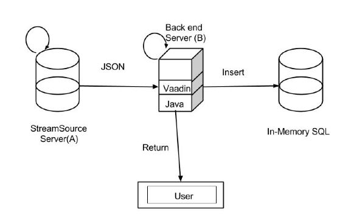

NanoStreambase Architecture

- “StreamSource” Server (A) sends POST requests to backend server (B)
- JSON is continuously sent from A -> B
- Parses JSON into HashMap <key,values>
- Vaadin = Java Front End Framework
- Responds to POST from server A
- Server B runs stream operations
- Processes front end requests from user
- Basic operations: filter, map, union, aggregate, split, merge
- Displays current content of streams to user
- Server B inserts parts of data into in-memory database depending on users’ requests